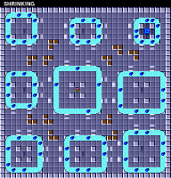

![[IMAGE]](bure/cat-hdr-out-xview.png)
Reverse engineering an unfamiliar data file could be described as the bootstrapping of understanding. In many ways the process resembles the scientific method, only applied to human-made, abstract objects instead of the natural world. You begin by gathering data, and then you use that information to put forth one or more hypotheses. You test the hypotheses, and use the outcome of those tests to refine them. Repeat as needed.
Developing skills in reverse engineering is largely a matter of practice. Through an accumulation of experiences, you build up an intuition of where to investigate first, what patterns to look for, and what tools to keep handy.
In this essay I will walk through the process of reverse-engineering some data files from an old computer game, in order to show you a little bit of how it's done.
This all started for me when I was attempting to re-create Chip's Challenge for Linux.
Chip's Challenge was a game originally released in 1989 for Atari's now-forgotten hand-held console called the Lynx. The Atari Lynx was an impressive machine for the time period, but it came out at the same time as Nintendo's Game Boy, which ultimately dominated the market.
Chip's Challenge is a puzzle game with a top-down view and a tile-based map. As with most such games, the goal of each level is to reach the exit. On most levels, the exit is guarded by a chip socket, which can only be passed once you've collected a specific number of computer chips.
|
|
|
You start a new game at the first level, called "LESSON 1". In addition to chips and the chip socket, the first level introduces you to keys and doors. Other levels include obstacles such as traps, bombs, bodies of water, and creatures which (mostly) move around in predictable patterns. The wide variety of objects and machinery allow for an immense range of puzzle-based and timing-based challenges. There are over 140 levels to solve in order to complete the game.
Though the Lynx was ultimately unsuccessful, Chip's Challenge was popular enough to be ported to many other platforms, eventually including Microsoft Windows, where it enjoyed widespread exposure. A small but loyal fan base coalesced around the game, and eventually a level editor was developed, allowing the creation of countless fan-made levels.
And here's where I came in. I decided I wanted to make an open source version of the basic game engine, that could play Chip's Challenge on Linux as well as Windows, and make it easy for me to play all the fan-made levels.
The existence of a level editor was wonderful for me, since I could use it to investigate obscure questions about the game logic by building custom levels and running tests. Unfortunately, no level editor existed for the original Lynx game — only for the more familiar Windows port.
Now, the Windows port wasn't done by the original team, and had introduced a great many changes to the game logic (not all of them intentional). When I started writing my engine, I wanted to provide both the original Lynx version's game logic and the more well-known Windows version. But the lack of a Lynx level editor seriously limited my ability to investigate the original game in detail. The Windows port had the advantage of having the levels stored in a separate data file, making it easy for people to isolate and reverse-engineer. In contrast, the Lynx game was distributed on ROM cartridges, which contained sprite images, sound effects, and machine code as well as the level data, all run together. There was no indication where the level data lived in this 128kB ROM dump, or what it looked like, and without that knowledge I had no way of creating a level editor for the Lynx version.
One day, while doing some idle research, I happened to find a copy of the MS-DOS port of Chip's Challenge. Like most of the earlier ports of the game, the game logic was closer to the original than the Windows version. When I looked at the program's data to see how it was stored, I was surprised to discover that the level data was broken out into its own directory, and each level was stored in its own separate file. With the level data isolated so finely, I guessed that it wouldn't be too hard to reverse-engineer the format of the level data files. This would make it possible to write a level editor for the MS-DOS version of the game. An interesting possibility, I thought.
But then another member of the Chip's Challenge community alerted me to an interesting fact. The contents of the MS-DOS level files appeared inside the dump of the Lynx ROM, byte for byte. This meant that if I could decode the MS-DOS files, I could then use this knowledge to read and modify the levels inside the Lynx ROM dump. It would be possible to build a level editor for the original Lynx game directly.
Reverse-engineering the MS-DOS level files was suddenly my top priority.
Here is a link to a tarball of the directory containing the data files. They are provided if you want to follow along with the process in the essay, or if you want to try your hand at decoding the data files yourself.
I am assuming that you know what hexadecimal is, even if you aren't proficient at decoding hexadecimal values, and that you have some familiarity with the Unix shell. The shell session displayed in this essay takes place on a typical Linux system, but the commands used are almost all well-established Unix utilities, and are widely available on other Unices.
Here's the listing of the directory containing the data files from the MS-DOS port:
As you can see, the files all end in .pak. The extension .pak is a
common extension for an application-specific data file, and
unfortunately gives no useful guidance to the internal structure. The
names of the files are essentially the first eight characters of the
level name, with a few exceptions. (For example, the levels
"BLOCK BUSTER" and "BLOCK BUSTER II" both omit the word "buster" from
their file names, so they don't collide.)
The directory contains 148 data files, and in fact there are exactly 148 levels in the game, so that checks out.
Let's look at what's actually in these files. xxd is the standard
hexdump utility, so let's see what "LESSON 1" looks like on the
inside.
Clearly, reverse-engineering these files isn't going to be as straightforward as merely looking at their contents and seeing what appears where. There isn't anything here that looks particularly obvious as to what function it serves.
Let's step back a moment and clarify: What data are we specifically expecting to be present in these data files?
The most obvious thing we would expect to see is some kind of "map" of the level — data which indicates the positions of the walls and the doors, and everything else that makes each level unique.
(Fortunately for us, fans of the game have painstakingly compiled complete maps of all 148 levels, so we can use them to see what each level's map should include.)
In addition to the map, each level has a handful of other attributes. For example, note that each level has a name, such as "LESSON 1", "PERFECT MATCH", "DRAWN AND QUARTERED", and so on. Different levels also have different time limits, so presumably that information also needs to be present in the data. Each level also has a different number of chips which need to be collected in order to get past the chip socket. (One might assume that this number would just be determined by the number of chips in the level, but as it turns out a few of the levels contain more chips than necessary to open the chip socket. For those levels at least, the actual minimum number must be specified explicitly.)
Another piece of data that we'd expect to find in the level data is the hint text. Some levels have a "hint button", a large question mark on the ground. When Chip stands on it, a bit of helpful text is shown. Only 20 or so levels have a hint button.
Finally, each level also has a password — a sequence of four letters which allows the player to resume the game at that level. (This password was necessary, because the Lynx had no persistent storage. There was no way to save games, so the password was how you avoided having to play the game from the start every time you turned it on.)
So, here's our list of data:
Let's take a moment to estimate the total size of this data. The easiest parts are the time limit and the chip count. Both of these are numbers which can range from 0 to 999, so they are likely stored as two-byte integer values, for a total of 4 bytes. The password is always four letters long, so likely stored as another four bytes, for a total of 8 bytes. The level names vary in length from four to nineteen characters. If we assume an extra byte for a string terminator, that's twenty bytes, giving a running total of 28 bytes. The longest hint text is over eighty bytes in size; if we round this up to ninety, we get 118 bytes total.
And what about the map layout? Well, most levels are 32 × 32 tiles in size. No levels are larger than this. A few levels appear to be smaller, although it wouldn't be unreasonable to suppose that they are merely embedded inside of a 32 × 32 layout. If we assume the map requires one byte per tile, that would be 1024 bytes for the full layout. This gives us a grand total of 1142 bytes as the estimated data size for each level. Of course this is just a rough initial estimate. It's entirely possible some of these items are stored differently than we've guessed, or they may not be in the level files at all. And other data may be present that we've overlooked or don't know about. But it's a good place to start.
Now that we've clarified what we're expecting the data files to contain, let's go back to looking at what they actually contain.
Even though the file's data appears to be completely opaque upon first glance, there are still a couple of things we can take note of. First off is what we don't see. We don't see the level's name, for example, or the hint text. We can verify that this isn't a fluke by checking the other files as well:
Nothing shows up but random bits of ASCII garbage.
Presumably the level names and hints are in these files, somewhere, but either they're not stored in ASCII, or they've undergone some sort of transformation (e.g. due to compression).
Another thing we should notice: this file is barely above 256 bytes in size. This is rather small, given our initial size estimate of over 1140 bytes.
The largest level file is only 680 bytes in size, which isn't very big. How small do they get?
The smallest level file is only 206 bytes, which is less than a third of the largest. This is a pretty wide range, given that we were expecting each level to be roughly the same size.
In our initial estimate, we figured the map layout would require one byte per tile, for a total of 1024 bytes. If we cut this estimate in half, so that each tile only requires 4 bits (or two tiles per byte), that's still 512 bytes for the map. 512 is smaller than 680, but it's still bigger than most level files. And anyway, 4 bits would only give us 16 different values, and there are far more than 16 different objects in this game.
So clearly, maps are not stored in the files in such a direct fashion. They either have a more complex encoding, one that allows for a more efficient representation, and/or they are explicitly compressed in some manner. In a level like "LESSON 1", for example, we could easily see how omitting entries for the "empty" tiles would dramatically decrease the overall size of the map data.
We can look at the maps of some of the largest files:

and then compare these with the maps of some of the smallest files:
This comparison supports the idea that smaller data files correspond with levels that are simpler, or contain more redundancy. If the data is compressed via some type of run-length encoding, for example, this might easily explain the range of different file sizes.
If the files are in fact compressed, then we will probably need to decipher the compression before we can start deciphering the map data.
Our cursory examination of the first data file has allowed us to make several inferences, but hasn't revealed anything concrete. As a next step, let's start looking for patterns in multiple data files. For now, we assume that all 148 files are using the same organizational scheme to encode their data, so looking for consistent patterns across files might help us get our foot in the door.
Let's start at the very beginning of the files. The top of the file is a likely place to store "metadata" that tells us about the file's contents. By looking at just the first line of the hex dump for each file, we can do a quick and easy visual comparison of the first 16 bytes, and look for any pattern that stands out:
By scrolling up and down through this, we can see what sorts of similarities appear in each column.
Starting with the first byte, we soon realize that its value appears
to fall into a rather restricted range of values, about hexadecimal
10–40 (or about 20–60 in decimal). This is pretty specific.
Even more interesting, the second byte of each file is always zero, without exception. Possibly the second byte is unused, or is padding. Another possibility, though, is that the first two bytes together represent a single 16-bit value, stored in little-endian order.
If we continue on this way, we will quickly see that the third byte in
the file is not like the previous two: its value ranges all over the
place. The fourth byte, however, is always either 00, 01, or 02,
with 01 being the most common. Again, this suggests that these two
bytes comprise another 16-bit value, with a range of approximately
0–700 in decimal. This hypothesis can be further reinforced by noting
that the value of the third byte tends to be low when the fourth
byte's value is 02, and tends to be high when the fourth byte is
00.
Note, by the way, that this is part of the motivation for the standard
hexdump format displaying bytes in pairs — it makes it easy to also
read the output as a sequence of 16-bit integers. The hexdump format
became standardized when 16-bit computers were the norm. Try replacing
xxd with xxd -g1 to turn off grouping entirely, and you can see
that identifying pairs of bytes in the middle of the line requires
more effort. This is a simple example of how the tools we use to look
at unfamiliar data bias us to notice certain types of patterns. It's
good that xxd defaults to highlighting this pattern, because it's a
common one (even nowadays, when 64-bit computers are ubiquitous). But
it's also good to know how to change these settings when they're not
helpful.
Let's continue our eyeball investigation, and see if this pattern of
16-bit integers holds up. The fifth byte tends to have very low
values: 02 and 03 are the most common, and 05 seems to be the
highest value. The sixth byte of the file is very frequently zero —
but every now and then it has a much larger value, such as 32 or
2C. We don't get as strong a suggestion of values spread out over a
range with this pair.
We can test this feeling more directly by using od to generate the
hex dump. The od utility is similar to xxd, but it provides a much
wider range of output formats. We can use it to dump the output as
16-bit decimal integers like so:
This output makes it clear that our intuitions about the first few bytes were correct. We can see that the file's first 16-bit value falls in the range of 20–70 decimal, and that the second 16-bit value ranges from 100–600 decimal. The values after these two are not so well-behaved, however. They do show certain patterns (such as the fact that 1024 appears in the fourth position surprisingly often), but they simply don't have the consistency of the first values in the file.
So let us tentatively conclude that the first four bytes in the file are special, and consist of two 16-bit values. Coming as they do at the very start of the file, they are likely metadata, and help define how to read the remainder of the file.
In fact, the second value's range of 100–600 is rather close to the range of file sizes we noticed earlier, which was 208–680. Maybe this isn't a coincidence? Let's put forth a hypothesis: the 16-bit value stored in the third and fourth byte of the file correlates with the overall file size. Now that we have a hypothesis, we can test it. Let's see if the larger files consistently have larger values at this location, and if smaller files have smaller values.
In order to display the size of a file in bytes, with no other
information, we can use wc with the -c option. Likewise, we can
add options to od to force it to output only the values we're
interested in. We can then use command substitution to capture these
values in shell variables and display them side by side:
When we look at this output, we can see the values do have a rough correlation. Smaller files tend to have smaller values in the second position, and larger files tend to have larger values. The correlation isn't exact, though, and it's worth noting that the file size is always considerably larger than the value stored in the file.
The first 16-bit integer also tends to be larger when the file size is larger, though this is also a bit inconsistent, and it's easy to find examples of medium-sized files with relatively large values in the first position. But maybe if we add the two values, their sum might correlate better with the file size?
We can use read to extract the two numbers from the output of od
into separate variables, and then use shell arithmetic to find their
sum:
The sum of the two numbers also roughly correlates with the file size, but it's still not quite the same. How far off is it, actually? Let's display the difference between them:
The difference, or "leftover" value, appears as the rightmost number in this output. This value doesn't quite fall into a regular pattern, but it does seem to stay in a limited range of about 40–120. And again, the larger files tend to have larger leftover values. But sometimes small files have large leftover values too, so it's not as consistent as we might wish.
Still, we should note that the leftover values are never negative. So the idea that the two metadata values are specifying subsections of the file still has some appeal.
(If you're sharp-eyed enough, you might have already spotted something which provides a hint to an as-yet unnoticed relationship. If you don't see it, then keep reading; the secret will be revealed before long.)
At this point, it would be nice if we could do a cross-file comparison of more than 16 bytes at a time. In order to do this, we'll need to use a different kind of visualization. One good technique would be to create an image, with each pixel representing a single byte from one of the files, the color indicating the byte's value. The image could show a cross-section of all 148 files at once, each data file providing one row of pixels in the image. Since every file is a different size, we'll take the first 200 bytes of each in order to produce a rectangular image.
The simplest image to produce is a grayscale image, where each byte value corresponds to a different level of gray. We can very easily create a PGM file with our data, as the PGM header consists entirely of ASCII text:
The P5 is the initial signature indicating the PGM file format. The
next two numbers, 200 and 148, give the width and height of the
image, and the final 255 specifies the maximum value per pixel. The
PGM header is terminated by a newline, after which follows the pixel
data. (Note that the PGM header is most commonly laid out on three
separate lines of text, but the PGM standard only requires the
elements to be separated by some kind of whitespace.)
We can use the head utility to pull the first 200 bytes out of each
file:
Then, we can concatenate this with our header to create a displayable image:
If you find it difficult to make out detail in a dark image, you might
find it easier to use a different color scheme. You can use
ImageMagick's pgmtoppm utility to map the pixels to a different
color range. This version will produce a "negative" image:
And this version makes low values yellow and high values blue:
Color visibility can be very subjective, so feel free to play around with this and see what works best for you. In any case, the 200 × 148 image is a little small, so the best thing for improving visibility is to enlarge it:
The image is dark, indicating that most bytes contain small values. In contrast to this is a prominent strip of mostly bright pixels near the left-hand edge. This strip is located at the third byte in the file, which as we noted earlier varies across the full range of values.
And though there aren't many high values outside the third byte, when we do find them they often appear in runs, creating short bright streaks in our image. Several of these runs appear to be periodically interrupted, creating a dotted-line effect. (It's possible that with the right colorization, we might notice such sequences in the dimmer pixels as well.)
Looking closely at our image will also reveal that much of the left-hand side is dominated by subtle vertical stripes. These stripes speak to some regularity which runs through most of the files. Not all of the files — there are the odd rows of pixels scattered about where the stripes are interrupted — but more than enough to establish the existence of a real pattern. This pattern disappears on the right-hand side of the image, the dim background of stripes giving way to something much more noisy and unpatterned. (The stripes also seem to be absent on the far-left edge of the image — but, again, using a different color scheme may show that they start closer to the left edge than they appear to here.)
The stripes consist of thin lines of slightly lighter pixels on a background of slightly darker pixels. This visual pattern should therefore correlate with a pattern in the data files of slightly higher byte values regularly interspersed among slightly lower byte values. The stripes appear to peter out about halfway across the image. Since the image shows the first 200 bytes of the files, we should expect the byte pattern to end after approximately 100 bytes.
The fact that these patterns change across the data files might lead
us to wonder what the files look like past the first 200 bytes. Well,
we can easily replace the head utility with tail and get a view of
what the last 200 bytes look like:
Immediately we see that this region of the data files is very different. There are a lot more occurrences of large byte values, particularly near the end of the file. (Though as before, they seem to prefer to cluster together, covering our image in bright horizontal streaks.) The high byte values seem to increase in frequency until near the end, when they abruptly give way to a return to low values for the last dozen or so bytes. And again, the pattern isn't universal, but is far too common to be coincidental.
There might be more areas to be found in the middle of the files, which we haven't really looked at yet. What we'd like to do next is look at all of the complete files in this way. But since the files are all different sizes, they don't make a nice rectangular array of pixels. We could pad out each line with black pixels, but it would be nicer if we could resize them to all be the same width, so that proportional areas will line up across files, more or less.
We can in fact do this, with only a little more work, by making use of
some python, along with its imaging library, PIL (a.k.a. "Pillow"):
| showbytes.py | ||
| ||
When we invoke this script with the full list of data files as arguments, it constructs a comprehensive image and displays it in a separate window:
Unfortunately this image, though comprehensive, doesn't really show us anything new. (It actually shows us less, since the resizing ruins the pattern of the stripes.) We might need a better visualization process for looking at the entire set of data.
With this in mind, let's pause a moment, and take an overall census of the data. We'd like to know if the data files favor certain byte values over others. If every value tends to be equally common, for example, this would be strong evidence that the files are in fact compressed.
It only takes a few lines of python to take a complete census of byte values:
| census.py | ||
| ||
By jamming all of the data into a single variable, we can easily produce a count of how often each byte value appears.
We can see that byte values 0 and 1 are the most common, 2 and 3 the
next most common, and from there the populations continue to decrease
(though with less consistency). For a better visualization of this
data, we can give the output to gnuplot and turn the census into a
bar graph:
It's very clear now that first few byte values are significantly more common than all others. The next several values are still relatively common, and then the frequencies of values after 50 or so drop off in a rather smooth, probabilistic curve. However, there is a subset of high values spaced evenly apart, whose frequency appears to be quite stable. Looking at the original output, we can confirm that this subset consists of values evenly divisible by eight.
These differences in population counts suggest that there are a few different "classes" of byte values, and so it might make sense to look at how these classes are distributed. The first group of byte values would be just the lowest values: 0, 1, 2, and 3. The second group might then be values from 4 to 64. And the third group would be values above 64 which are evenly divisible by 8. Everything else, namely values above 64 not divisible by 8, would make up the fourth and final group.
So, with this in mind, let's modify our last image-generating script. Instead of trying to show the actual values of each byte as a separate color, let's simply show which group each byte falls in. We can assign a distinct color to each of the four groups, and this should make it easy to see if certain values tend to appear in certain places.
| showbytes2.py | ||
| ||
We're assigning red, green, blue, and white to the four groups respectively. (Again, feel free to try out different color assignments to suit your personal tastes.)
With this image, we can tentatively confirm our division of the data files into five sections:
These colors make clear that the fourth section, the one dominated by high byte values as we saw in the grayscale image, is specifically dominated by high byte values divisible by 8.
We know from the previous image that the second section, a.k.a. the striped section, extends past the mostly-red area. In fact, we saw in one of the first images that the striped section seemed to slowly brighten on average as it went from left to right.
Again, the non-green pixels in the main third section seem to occasionally form dotted-line patterns, alternating green with red (or blue or white). This pattern isn't terribly regular, though, and might be spurious.
This division of the file into five sections is very tentative, of course. The fourth section, with the high byte values divisible by eight, might turn out to just be the end of the third section. Or the large third section might turn out to be better divided into multiple sections that we can't currently distinguish. At this point, the identifying of sections is more about helping us find places to further dig in. It's enough for now to know that there are sections where the overall population of byte values changes, and knowing roughly how big they are can help guide us as we continue to investigate.
So where should we look now? Well, as before, it's probably easiest to start at the top. Or rather, near the top. Since we've already pretty confidently identified the first section as a four-byte header, let's start looking more closely at what comes next — the area we've been calling section two, or the striped section. Those stripes are our biggest hint of the presence of structure, so that's the best place to look for more indications of pattern.
(For the moment, we're assuming the striped pattern begins immediately after the first four bytes. It's not visually obvious that it does, but it seems likely, and an examination of the byte values should quickly determine the truth.)
Let's go back to the hex dump, this time focusing specifically on the beginning of section two. Remember, what we're expecting to find is a recurring pattern of slightly higher byte values regularly interspersed among slightly lower byte values.
Looking closely at the sequence of bytes in a line, we can see a pattern in which the 1st, 4th, 7th, and 10th byte is larger than its immediate neighbors. It's not a perfect pattern — there are certainly exceptions — but it's definitely pervasive enough to generate the visual regularity of stripes we noticed in the images. (And it's enough to confirm our assumption that the pattern of stripes begins immediately after the four-byte header.)
The consistency of this pattern suggests strongly that this section of the file is an array or a table, with each entry in the array being three bytes long.
We can adjust our hexdump format to make it easier to see the output as a series of triplets:
With the hex dump formatted this way, some more features of this
pattern start to stand out. As before, the first byte of each triplet
tends to be larger than the bytes surrounding it. We can also see that
the second and third byte in each triplet are frequently duplicated.
Running down the first column, we see the majority of second and third
bytes values are 0000. But the non-zero ones often come in pairs as
well, like 0101 or 2323. Again, this isn't a perfect pattern, but
it's much too common to be coincidental. And glancing at the ASCII
column on the far right confirms that, when we do have byte values
high enough to map to a printable ASCII character, they often do
appear in pairs.
Another noteworthy pattern, though not as immediately obvious, is that the first byte in each triplet increases as we proceed from left to right. Although this pattern is less immediately visible, it is highly consistent; we have to look through many lines to find our first counterexample. And the bytes tend to increase by small amounts, though not in any kind of regular pattern.
Something we noticed when looking at the original image is that the striped section doesn't end at the same place in each file. There is a transition from the stripe-forming pattern on the left to the random-looking noise on the right, but this transition happens at a different point for each row of pixels. This implies that some kind of marker must be present, so a program reading the data file would be able to tell when the array ends and the next set of data begins.
Let's return to the hex dump for just the first level, so we can see the whole thing:
Looking along the sequence of triplets, we can tentatively guess that
the striped section in this data file ends after 17 triplets, at
offset 00000036. This isn't certain, but the first byte of each
triplet is continually increasing in value, but then decreases at the
18th triplet. And another piece of evidence is that at the 18th
triplet, the second byte has the same value as the first byte. This
isn't something we noticed earlier, but if we go back and look, we'll
see the first byte is never the same as the second or third bytes.
If our marker theory is correct, then there are two possibilities. The first possibility is that there is some kind of special byte value after the striped section (i.e. immediately following the 17th triplet). The second possibility is that there is a value stored somewhere which equals the size of the striped section. This size might be indicated by the number 17 (to indicate the number of triplets), or 51 (giving the total number of bytes in the section), or 55 (51 plus 4, the file offset where the section ends).
For the first possibility, the doubled byte value could conceivably be a section end marker (assuming such a sequence never actually appears as part of section two). However, a careful examination of a few other data files contradicts this idea, as no such pattern appears elsewhere.
For the second possibility, an obvious place to look for this size indicator would be in section one. Lo and behold, the first 16-bit value in the file's four-byte header is 17:
If our theory is correct, then, this value doesn't measure the actual size of the striped section, but rather the number of three-byte entries. To put this idea to the test, let's go back to the calculation we did earlier comparing the sum of the two 16-bit integers with the file size. This time, we'll multiply the first number by three to get an actual size in bytes:
Aha! With this change, the total sum of values from our header is always exactly four less than the size of the entire data file. And since four is also the number of bytes in the header, it is clear that this is not a coincidence. The first number gives the number of three-byte entries in the table, and the second number gives the number of bytes which make up the remainder of the data file.
We have found a consistent formula, so we now completely understand what the numbers in section one represent.
(By the way, here is the secret pattern that I said sharp-eyed readers might have spotted, back when we were first experimenting with these numbers. Looking closely at the equations would reveal that when files had the same first number, they also had the same leftover difference. This is because this difference was always just twice the value of the first number plus four. It's not an obvious pattern, but it's one that a meticulous or lucky person might have noticed.)
So we can now characterize the file as having three main sections:
(The other sections that we roughly identified earlier must therefore be subsections of the third section.)
Given this layout, it would be natural to assume that the entries in the section two table are some kind of metadata, which are needed to interpret the data in the third section.
So … what kind of metadata does this table contain?
We have noted previously a couple of indicators which suggest that the data file may be compressed. (This is even more compelling now that we know the third section of each file, presumably containing the main data for each level, is only 100–600 bytes in size.) If so, then it is likely that the table preceding the main data provides compression metadata — a dictionary of some kind which is applied during decompression. Huffman-encoded data, for example, is typically preceded by a dictionary mapping the original byte values to bit sequences. While we don't expect that these files are Huffman-encoded (as the data shows clear patterns on the byte level, and thus is unlikely to be a bitstream), it's not unreasonable to try to interpret this table as a decompression dictionary.
(Of course, not every compression scheme makes use of a stored
dictionary. The deflate algorithm used by gzip and zlib, for
example, allows the dictionary to be re-created from the data stream
directly. But these tend to be the exception rather than the rule.)
Typically an entry in a dictionary consists of two parts: a key, and a value. Sometimes the key is implicit, of course, as when the dictionary is organized as an array instead of a lookup table. However, we've already observed that the three-byte entries seem to come in two parts — specifically, the first byte of each entry follows a pattern which is distinctly different from the pattern followed by the second and third bytes. Given this, it seems like a reasonable first hypothesis would be to treat the first byte as the key and the remaining two bytes as the value.
If so, then one of the simplest way to interpret the striped section is that the first byte is the byte value in the compressed data to replace, and the second and third bytes are the values to replace them with. The result of this scheme would certainly be larger, though it's not clear by how much. Still, it's not an unreasonable hypothesis, and it's easy enough to test it out. We can write a short python program to apply this decompression scheme:
| decompress.py | ||
| ||
We can then try out this script on a sample data file:
The results are pretty lackluster, however. The resulting data stream has in fact expanded from the original, to be sure — but not much. Certainly not as much as we need for it to contain all the data that we expect to find. This decompression scheme is apparently a little too simple.
If we examine the resulting output more closely, we'll quickly see
that it begins with a lot of repeated bytes. 0b, 04, 00, 0a
all appear in pairs. Looking back at the compressed original, we will
see that all of these pairs came from our replacements using the
dictionary. But in the process, we can hardly fail to notice that all
of these repeated values also correspond to entries in the dictionary.
That is, if we applied the dictionary again, the data would expand
further. So … perhaps we didn't decompress enough?
Our first instinct might be to do a second pass, applying each dictionary entry a second time to expand the data further. Our second instinct might be to do multiple passes with the dictionary, repeating the process until all bytes which appear as dictionary keys have been replaced. However, if we look more closely at the dictionary's organization, we should eventually realize that if we simply apply the dictionary entries from right to left, instead of from left to right, then all of the values should get expanded in a single pass.
With this hypothesis, we can see the structure for a more plausible compression algorithm. The program takes the original data, and scans it to find the most commonly appearing two-byte sequence. It then replaces this two-byte sequence with a single byte value which currently does not appear in the data. It then repeats this process, continuing until no two-byte sequence appears more than twice in the data. In fact, this compression algorithm has a name: It is known as "byte pair encoding" — or sometimes as "re-pair compression", short for "recursive pairs".
(And this can account for some of the patterns we see in the dictionary. The dictionary is built up from left to right while compressing, thus it needs to be applied from right to left when decompressing. Since dictionary entries often refer to previous entries, it makes sense that the second and third bytes would frequently be lower in value than the first byte.)
So. We can make a one-line change to our python program to apply the dictionary from right to left:
| decompress2.py | ||
| ||
When we try this version, we get a much larger output:
We see a lot of zero bytes in this output — but this may be consistent with a mostly-empty map. The non-zero bytes in the data do seem to be clumped up near each other. Since we're hoping to find a 32 × 32 map, let's reformat the output to 32 bytes per line:
By focusing on the patterns of non-zero values, we can see what clearly appears to be a map in the output. In fact, we can make this pattern more visible by using a "colorized" hexdump tool which assigns different colors to each byte value, making it easier to see patterns of repeated values:
| 00000000: | 0000 0000 0000 0000 0000 0000 0000 0000 0000 0000 0000 0000 0000 0000 0000 0000 | ␀ | ␀ | ␀ | ␀ | ␀ | ␀ | ␀ | ␀ | ␀ | ␀ | ␀ | ␀ | ␀ | ␀ | ␀ | ␀ | ␀ | ␀ | ␀ | ␀ | ␀ | ␀ | ␀ | ␀ | ␀ | ␀ | ␀ | ␀ | ␀ | ␀ | ␀ | ␀ |
| 00000020: | 0000 0000 0000 0000 0000 0000 0000 0000 0000 0000 0000 0000 0000 0000 0000 0000 | ␀ | ␀ | ␀ | ␀ | ␀ | ␀ | ␀ | ␀ | ␀ | ␀ | ␀ | ␀ | ␀ | ␀ | ␀ | ␀ | ␀ | ␀ | ␀ | ␀ | ␀ | ␀ | ␀ | ␀ | ␀ | ␀ | ␀ | ␀ | ␀ | ␀ | ␀ | ␀ |
| 00000040: | 0000 0000 0000 0000 0000 0000 0000 0000 0000 0000 0000 0000 0000 0000 0000 0000 | ␀ | ␀ | ␀ | ␀ | ␀ | ␀ | ␀ | ␀ | ␀ | ␀ | ␀ | ␀ | ␀ | ␀ | ␀ | ␀ | ␀ | ␀ | ␀ | ␀ | ␀ | ␀ | ␀ | ␀ | ␀ | ␀ | ␀ | ␀ | ␀ | ␀ | ␀ | ␀ |
| 00000060: | 0000 0000 0000 0000 0000 0000 0000 0000 0000 0000 0000 0000 0000 0000 0000 0000 | ␀ | ␀ | ␀ | ␀ | ␀ | ␀ | ␀ | ␀ | ␀ | ␀ | ␀ | ␀ | ␀ | ␀ | ␀ | ␀ | ␀ | ␀ | ␀ | ␀ | ␀ | ␀ | ␀ | ␀ | ␀ | ␀ | ␀ | ␀ | ␀ | ␀ | ␀ | ␀ |
| 00000080: | 0000 0000 0000 0000 0000 0000 0000 0000 0000 0000 0000 0000 0000 0000 0000 0000 | ␀ | ␀ | ␀ | ␀ | ␀ | ␀ | ␀ | ␀ | ␀ | ␀ | ␀ | ␀ | ␀ | ␀ | ␀ | ␀ | ␀ | ␀ | ␀ | ␀ | ␀ | ␀ | ␀ | ␀ | ␀ | ␀ | ␀ | ␀ | ␀ | ␀ | ␀ | ␀ |
| 000000A0: | 0000 0000 0000 0000 0000 0000 0000 0000 0000 0000 0000 0000 0000 0000 0000 0000 | ␀ | ␀ | ␀ | ␀ | ␀ | ␀ | ␀ | ␀ | ␀ | ␀ | ␀ | ␀ | ␀ | ␀ | ␀ | ␀ | ␀ | ␀ | ␀ | ␀ | ␀ | ␀ | ␀ | ␀ | ␀ | ␀ | ␀ | ␀ | ␀ | ␀ | ␀ | ␀ |
| 000000C0: | 0000 0000 0000 0000 0000 0000 0000 0000 0000 0000 0000 0000 0000 0000 0000 0000 | ␀ | ␀ | ␀ | ␀ | ␀ | ␀ | ␀ | ␀ | ␀ | ␀ | ␀ | ␀ | ␀ | ␀ | ␀ | ␀ | ␀ | ␀ | ␀ | ␀ | ␀ | ␀ | ␀ | ␀ | ␀ | ␀ | ␀ | ␀ | ␀ | ␀ | ␀ | ␀ |
| 000000E0: | 0000 0000 0000 0000 0000 0000 0000 0000 0000 0000 0000 0000 0000 0000 0000 0000 | ␀ | ␀ | ␀ | ␀ | ␀ | ␀ | ␀ | ␀ | ␀ | ␀ | ␀ | ␀ | ␀ | ␀ | ␀ | ␀ | ␀ | ␀ | ␀ | ␀ | ␀ | ␀ | ␀ | ␀ | ␀ | ␀ | ␀ | ␀ | ␀ | ␀ | ␀ | ␀ |
| 00000100: | 0000 0000 0000 0000 0000 0101 0101 0100 0101 0101 0100 0000 0000 0000 0000 0000 | ␀ | ␀ | ␀ | ␀ | ␀ | ␀ | ␀ | ␀ | ␀ | ␀ | ␁ | ␁ | ␁ | ␁ | ␁ | ␀ | ␁ | ␁ | ␁ | ␁ | ␁ | ␀ | ␀ | ␀ | ␀ | ␀ | ␀ | ␀ | ␀ | ␀ | ␀ | ␀ |
| 00000120: | 0000 0000 0000 0000 0000 0100 0000 0101 0100 0000 0100 0000 0000 0000 0000 0000 | ␀ | ␀ | ␀ | ␀ | ␀ | ␀ | ␀ | ␀ | ␀ | ␀ | ␁ | ␀ | ␀ | ␀ | ␁ | ␁ | ␁ | ␀ | ␀ | ␀ | ␁ | ␀ | ␀ | ␀ | ␀ | ␀ | ␀ | ␀ | ␀ | ␀ | ␀ | ␀ |
| 00000140: | 0000 0000 0000 0000 0000 0100 2300 0125 0100 2300 0100 0000 0000 0000 0000 0000 | ␀ | ␀ | ␀ | ␀ | ␀ | ␀ | ␀ | ␀ | ␀ | ␀ | ␁ | ␀ | # | ␀ | ␁ | % | ␁ | ␀ | # | ␀ | ␁ | ␀ | ␀ | ␀ | ␀ | ␀ | ␀ | ␀ | ␀ | ␀ | ␀ | ␀ |
| 00000160: | 0000 0000 0000 0000 0101 0101 011D 0124 011D 0101 0101 0100 0000 0000 0000 0000 | ␀ | ␀ | ␀ | ␀ | ␀ | ␀ | ␀ | ␀ | ␁ | ␁ | ␁ | ␁ | ␁ | ␝ | ␁ | $ | ␁ | ␝ | ␁ | ␁ | ␁ | ␁ | ␁ | ␀ | ␀ | ␀ | ␀ | ␀ | ␀ | ␀ | ␀ | ␀ |
| 00000180: | 0000 0000 0000 0000 0100 2000 1B00 0000 0000 1A00 2000 0100 0000 0000 0000 0000 | ␀ | ␀ | ␀ | ␀ | ␀ | ␀ | ␀ | ␀ | ␁ | ␀ | ␠ | ␀ | ␛ | ␀ | ␀ | ␀ | ␀ | ␀ | ␚ | ␀ | ␠ | ␀ | ␁ | ␀ | ␀ | ␀ | ␀ | ␀ | ␀ | ␀ | ␀ | ␀ |
| 000001A0: | 0000 0000 0000 0000 0100 2300 011F 0033 001E 0100 2300 0100 0000 0000 0000 0000 | ␀ | ␀ | ␀ | ␀ | ␀ | ␀ | ␀ | ␀ | ␁ | ␀ | # | ␀ | ␁ | ␟ | ␀ | 3 | ␀ | ␞ | ␁ | ␀ | # | ␀ | ␁ | ␀ | ␀ | ␀ | ␀ | ␀ | ␀ | ␀ | ␀ | ␀ |
| 000001C0: | 0000 0000 0000 0000 0101 0101 0123 0000 0023 0101 0101 0100 0000 0000 0000 0000 | ␀ | ␀ | ␀ | ␀ | ␀ | ␀ | ␀ | ␀ | ␁ | ␁ | ␁ | ␁ | ␁ | # | ␀ | ␀ | ␀ | # | ␁ | ␁ | ␁ | ␁ | ␁ | ␀ | ␀ | ␀ | ␀ | ␀ | ␀ | ␀ | ␀ | ␀ |
| 000001E0: | 0000 0000 0000 0000 0100 2300 011F 0000 001E 0100 2300 0100 0000 0000 0000 0000 | ␀ | ␀ | ␀ | ␀ | ␀ | ␀ | ␀ | ␀ | ␁ | ␀ | # | ␀ | ␁ | ␟ | ␀ | ␀ | ␀ | ␞ | ␁ | ␀ | # | ␀ | ␁ | ␀ | ␀ | ␀ | ␀ | ␀ | ␀ | ␀ | ␀ | ␀ |
| 00000200: | 0000 0000 0000 0000 0100 0000 1A00 0023 0000 1B00 0000 0100 0000 0000 0000 0000 | ␀ | ␀ | ␀ | ␀ | ␀ | ␀ | ␀ | ␀ | ␁ | ␀ | ␀ | ␀ | ␚ | ␀ | ␀ | # | ␀ | ␀ | ␛ | ␀ | ␀ | ␀ | ␁ | ␀ | ␀ | ␀ | ␀ | ␀ | ␀ | ␀ | ␀ | ␀ |
| 00000220: | 0000 0000 0000 0000 0101 0101 0101 1C01 1C01 0101 0101 0100 0000 0000 0000 0000 | ␀ | ␀ | ␀ | ␀ | ␀ | ␀ | ␀ | ␀ | ␁ | ␁ | ␁ | ␁ | ␁ | ␁ | ␜ | ␁ | ␜ | ␁ | ␁ | ␁ | ␁ | ␁ | ␁ | ␀ | ␀ | ␀ | ␀ | ␀ | ␀ | ␀ | ␀ | ␀ |
| 00000240: | 0000 0000 0000 0000 0000 0000 0100 0001 0000 0100 0000 0000 0000 0000 0000 0000 | ␀ | ␀ | ␀ | ␀ | ␀ | ␀ | ␀ | ␀ | ␀ | ␀ | ␀ | ␀ | ␁ | ␀ | ␀ | ␁ | ␀ | ␀ | ␁ | ␀ | ␀ | ␀ | ␀ | ␀ | ␀ | ␀ | ␀ | ␀ | ␀ | ␀ | ␀ | ␀ |
| 00000260: | 0000 0000 0000 0000 0000 0000 0100 2301 2300 0100 0000 0000 0000 0000 0000 0000 | ␀ | ␀ | ␀ | ␀ | ␀ | ␀ | ␀ | ␀ | ␀ | ␀ | ␀ | ␀ | ␁ | ␀ | # | ␁ | # | ␀ | ␁ | ␀ | ␀ | ␀ | ␀ | ␀ | ␀ | ␀ | ␀ | ␀ | ␀ | ␀ | ␀ | ␀ |
| 00000280: | 0000 0000 0000 0000 0000 0000 0100 0001 2100 0100 0000 0000 0000 0000 0000 0000 | ␀ | ␀ | ␀ | ␀ | ␀ | ␀ | ␀ | ␀ | ␀ | ␀ | ␀ | ␀ | ␁ | ␀ | ␀ | ␁ | ! | ␀ | ␁ | ␀ | ␀ | ␀ | ␀ | ␀ | ␀ | ␀ | ␀ | ␀ | ␀ | ␀ | ␀ | ␀ |
| 000002A0: | 0000 0000 0000 0000 0000 0000 0101 0101 0101 0100 0000 0000 0000 0000 0000 0000 | ␀ | ␀ | ␀ | ␀ | ␀ | ␀ | ␀ | ␀ | ␀ | ␀ | ␀ | ␀ | ␁ | ␁ | ␁ | ␁ | ␁ | ␁ | ␁ | ␀ | ␀ | ␀ | ␀ | ␀ | ␀ | ␀ | ␀ | ␀ | ␀ | ␀ | ␀ | ␀ |
| 000002C0: | 0000 0000 0000 0000 0000 0000 0000 0000 0000 0000 0000 0000 0000 0000 0000 0000 | ␀ | ␀ | ␀ | ␀ | ␀ | ␀ | ␀ | ␀ | ␀ | ␀ | ␀ | ␀ | ␀ | ␀ | ␀ | ␀ | ␀ | ␀ | ␀ | ␀ | ␀ | ␀ | ␀ | ␀ | ␀ | ␀ | ␀ | ␀ | ␀ | ␀ | ␀ | ␀ |
| 000002E0: | 0000 0000 0000 0000 0000 0000 0000 0000 0000 0000 0000 0000 0000 0000 0000 0000 | ␀ | ␀ | ␀ | ␀ | ␀ | ␀ | ␀ | ␀ | ␀ | ␀ | ␀ | ␀ | ␀ | ␀ | ␀ | ␀ | ␀ | ␀ | ␀ | ␀ | ␀ | ␀ | ␀ | ␀ | ␀ | ␀ | ␀ | ␀ | ␀ | ␀ | ␀ | ␀ |
Compare this with the fan-made map of the first level:
Unquestionably, we are looking at the data for the level's map. We can feel pretty confident that we have correctly deduced the decompression algorithm.
By comparing the byte values to the map image, we can determine that
00 encodes an empty tile, 01 encodes a wall, and 23 represents a
chip. 1A represents a red door, 1B represents a blue door, and so
on. We can assign explicit values to chips, keys, doors, and every
other tile which make up the level's map.
We can then proceed to the next level, and identify the byte values for the objects appearing in there. And so on to the next levels, and eventually we will have a complete list of byte values and the game objects that they encode.
As we had originally guessed, the map ends after exactly 1024 bytes
(at offset 000003FF).
| 00000400: | 0600 0000 0000 0000 0000 0000 0000 0000 0000 0000 0000 0000 0000 0000 0000 0000 | ␆ | ␀ | ␀ | ␀ | ␀ | ␀ | ␀ | ␀ | ␀ | ␀ | ␀ | ␀ | ␀ | ␀ | ␀ | ␀ | ␀ | ␀ | ␀ | ␀ | ␀ | ␀ | ␀ | ␀ | ␀ | ␀ | ␀ | ␀ | ␀ | ␀ | ␀ | ␀ |
| 00000420: | 0000 0000 0000 0000 0000 0000 0000 0000 0000 0000 0000 0000 0000 0000 0000 0000 | ␀ | ␀ | ␀ | ␀ | ␀ | ␀ | ␀ | ␀ | ␀ | ␀ | ␀ | ␀ | ␀ | ␀ | ␀ | ␀ | ␀ | ␀ | ␀ | ␀ | ␀ | ␀ | ␀ | ␀ | ␀ | ␀ | ␀ | ␀ | ␀ | ␀ | ␀ | ␀ |
| 00000440: | 0000 0000 0000 0000 0000 0000 0000 0000 0000 0000 0000 0000 0000 0000 0000 0000 | ␀ | ␀ | ␀ | ␀ | ␀ | ␀ | ␀ | ␀ | ␀ | ␀ | ␀ | ␀ | ␀ | ␀ | ␀ | ␀ | ␀ | ␀ | ␀ | ␀ | ␀ | ␀ | ␀ | ␀ | ␀ | ␀ | ␀ | ␀ | ␀ | ␀ | ␀ | ␀ |
| 00000460: | 0000 0000 0000 0000 0000 0000 0000 0000 0000 0000 0000 0000 0000 0000 0000 0000 | ␀ | ␀ | ␀ | ␀ | ␀ | ␀ | ␀ | ␀ | ␀ | ␀ | ␀ | ␀ | ␀ | ␀ | ␀ | ␀ | ␀ | ␀ | ␀ | ␀ | ␀ | ␀ | ␀ | ␀ | ␀ | ␀ | ␀ | ␀ | ␀ | ␀ | ␀ | ␀ |
| 00000480: | 7800 0000 0000 0000 0000 0000 0000 0000 0000 0000 0000 0000 0000 0000 0000 0000 | x | ␀ | ␀ | ␀ | ␀ | ␀ | ␀ | ␀ | ␀ | ␀ | ␀ | ␀ | ␀ | ␀ | ␀ | ␀ | ␀ | ␀ | ␀ | ␀ | ␀ | ␀ | ␀ | ␀ | ␀ | ␀ | ␀ | ␀ | ␀ | ␀ | ␀ | ␀ |
| 000004A0: | 0000 0000 0000 0000 0000 0000 0000 0000 0000 0000 0000 0000 0000 0000 0000 0000 | ␀ | ␀ | ␀ | ␀ | ␀ | ␀ | ␀ | ␀ | ␀ | ␀ | ␀ | ␀ | ␀ | ␀ | ␀ | ␀ | ␀ | ␀ | ␀ | ␀ | ␀ | ␀ | ␀ | ␀ | ␀ | ␀ | ␀ | ␀ | ␀ | ␀ | ␀ | ␀ |
| 000004C0: | 0000 0000 0000 0000 0000 0000 0000 0000 0000 0000 0000 0000 0000 0000 0000 0000 | ␀ | ␀ | ␀ | ␀ | ␀ | ␀ | ␀ | ␀ | ␀ | ␀ | ␀ | ␀ | ␀ | ␀ | ␀ | ␀ | ␀ | ␀ | ␀ | ␀ | ␀ | ␀ | ␀ | ␀ | ␀ | ␀ | ␀ | ␀ | ␀ | ␀ | ␀ | ␀ |
| 000004E0: | 0000 0000 0000 0000 0000 0000 0000 0000 0000 0000 0000 0000 0000 0000 0000 0000 | ␀ | ␀ | ␀ | ␀ | ␀ | ␀ | ␀ | ␀ | ␀ | ␀ | ␀ | ␀ | ␀ | ␀ | ␀ | ␀ | ␀ | ␀ | ␀ | ␀ | ␀ | ␀ | ␀ | ␀ | ␀ | ␀ | ␀ | ␀ | ␀ | ␀ | ␀ | ␀ |
| 00000500: | 7000 0000 0000 0000 0000 0000 0000 0000 0000 0000 0000 0000 0000 0000 0000 0000 | p | ␀ | ␀ | ␀ | ␀ | ␀ | ␀ | ␀ | ␀ | ␀ | ␀ | ␀ | ␀ | ␀ | ␀ | ␀ | ␀ | ␀ | ␀ | ␀ | ␀ | ␀ | ␀ | ␀ | ␀ | ␀ | ␀ | ␀ | ␀ | ␀ | ␀ | ␀ |
| 00000520: | 0000 0000 0000 0000 0000 0000 0000 0000 0000 0000 0000 0000 0000 0000 0000 0000 | ␀ | ␀ | ␀ | ␀ | ␀ | ␀ | ␀ | ␀ | ␀ | ␀ | ␀ | ␀ | ␀ | ␀ | ␀ | ␀ | ␀ | ␀ | ␀ | ␀ | ␀ | ␀ | ␀ | ␀ | ␀ | ␀ | ␀ | ␀ | ␀ | ␀ | ␀ | ␀ |
| 00000540: | 0000 0000 0000 0000 0000 0000 0000 0000 0000 0000 0000 0000 0000 0000 0000 0000 | ␀ | ␀ | ␀ | ␀ | ␀ | ␀ | ␀ | ␀ | ␀ | ␀ | ␀ | ␀ | ␀ | ␀ | ␀ | ␀ | ␀ | ␀ | ␀ | ␀ | ␀ | ␀ | ␀ | ␀ | ␀ | ␀ | ␀ | ␀ | ␀ | ␀ | ␀ | ␀ |
| 00000560: | 0000 0000 0000 0000 0000 0000 0000 0000 0000 0000 0000 0000 0000 0000 0000 0000 | ␀ | ␀ | ␀ | ␀ | ␀ | ␀ | ␀ | ␀ | ␀ | ␀ | ␀ | ␀ | ␀ | ␀ | ␀ | ␀ | ␀ | ␀ | ␀ | ␀ | ␀ | ␀ | ␀ | ␀ | ␀ | ␀ | ␀ | ␀ | ␀ | ␀ | ␀ | ␀ |
| 00000580: | 6400 1710 1E1E 1A19 0103 000E 1A17 1710 0E1F 010E 1314 1B1E 011F 1A00 1210 1F01 | d | ␀ | ␗ | ␐ | ␞ | ␞ | ␚ | ␙ | ␁ | ␃ | ␀ | ␎ | ␚ | ␗ | ␗ | ␐ | ␎ | ␟ | ␁ | ␎ | ␓ | ␔ | ␛ | ␞ | ␁ | ␟ | ␚ | ␀ | ␒ | ␐ | ␟ | ␁ |
| 000005A0: | 1B0C 1E1F 011F 1310 010E 1314 1B00 1E1A 0E16 101F 2D00 201E 1001 1610 241E 011F | ␛ | ␌ | ␞ | ␟ | ␁ | ␟ | ␓ | ␐ | ␁ | ␎ | ␓ | ␔ | ␛ | ␀ | ␞ | ␚ | ␎ | ␖ | ␐ | ␟ | - | ␀ | ␠ | ␞ | ␐ | ␁ | ␖ | ␐ | $ | ␞ | ␁ | ␟ |
| 000005C0: | 1A01 1A1B 1019 000F 1A1A 1D1E 2D00 00 | ␚ | ␁ | ␚ | ␛ | ␐ | ␙ | ␀ | ␏ | ␚ | ␚ | ␝ | ␞ | - | ␀ | ␀ |
Immediately following the map data is a sequence of 384 bytes (ranging
from 00000400–0000057F) which are almost entirely zeros, but with
a few non-zero bytes tossed in. After that is a completely different
pattern of bytes, so it makes sense to assume that this 384-byte
sequence is a section of its own.
If we look at a few other levels, we'll quickly see a pattern. The 384-byte section actually consists of three subsections, each 128 bytes long. Each subsection starts out with a number of non-zero bytes, after which zeros are used to pad out the remainder of the subsection.
Some levels have a lot of data here; some (like the first level) only have a minimum. By comparing the levels with their maps, we will soon see that the amount of data appearing in this section is directly related to the number of "mobs" in the level. In this case, the term "mob" includes the creatures in the level, the dirt blocks (which don't move independently, but can be pushed around), and Chip himself (the player). So the mobs don't appear on the map proper, but are instead encoded in these three buffers.
Once we know that these three subsections provide the data to specify the level's mobs, it's not too difficult to work out what the individual subsections contain.
The first 128-byte subsection is a list of byte values that specify the type of mob. For example, the second level's buffers look like this:
Compare this with the map for the level:
This level contains six mobs: three bugs, two blocks, and Chip. The
first 128-byte subsection contains one 06 byte, three 08 bytes,
and two 1C bytes. It is reasonable to conclude that 06 indicates
Chip, 08 indicates a bug, and 1C indicates a block.
(As we continue to compare the data files with the level maps, and to
fill out our dictionary of mobs, we will quickly discover a wrinkle in
this theory: Chip can be represented by four different values, namely
04, 05, 06, or 07. This multiplicity of representations holds
for all mobs, in fact. A careful comparison of the different values
will eventually reveal that the byte value indicating the type has a
value of 0, 1, 2, or 3 added to it, indicating which way the mob is
initially facing: north, east, south, or west respectively. Thus, a
byte value of 06 specifically indicates Chip facing south.)
The meaning of the other two subsections are less obvious. But, by focusing on repeated values in these subsections and comparing the maps for those mobs, eventually it becomes clear that the bytes in the second subsection provide the x-coordinate of each mob, and the bytes in the third subsection provide the y-coordinate of each mob. This solution is made less immediately obvious by the fact that the coordinates stored in these subsections are actually shifted left 3 bits, i.e. they are multiplied by 8. This little fact conveniently explains the "blue" population group that we identified in the census. (The reason these values are shifted is unclear, but a likely explanation is that the lower three bits are used for representing frames of animation while mobs are in motion.)
With this section dispensed with, we can now see that many of the data files only have a few bytes left to account for:
A survey of the first pair of bytes in the remainder will quickly suggest they hold yet another 16-bit integer. Read this way, most values turn out to be round numbers in decimal:
If we refer back to the list we originally made of the data that we expected to find in the files, we will realize that this number is the level's time limit (with a value of zero for levels which are untimed).
After these two bytes, the data becomes less regular. The fact that most levels only have a dozen or so bytes left in the file severely limits what else can be contained here:
This level, for example, has nine bytes left over. Consider this
limited size, and then add to it the fact that these nine bytes
contain four occurrences of the value 17, arranged into two pairs.
It doesn't take long to notice that the pattern of 17s correspond to
the pattern of letter Ls in the title "ALL FULL". The title is eight
characters long, so the zero byte at the end is presumably a string
terminator.
Once we've discovered this, it's a trivial matter to look through the other levels and use their titles to compile a full character list:
00 |
string terminator |
01 |
space |
02–0B |
digits 0 through 9 |
0C–25 |
letters A through Z |
26–30 |
punctuation marks |
For most levels, this is the end of the data file. A couple dozen, however, have data following the title. If we look at the list, we'll quickly see that they are the levels which contain hint buttons, and this remaining data gives the text of the level's hint string, encoded in the same character set as the titles.
With that, we have reached the end of all of the files. We now have a full description of the layout of the level data. Our task is complete.
The perceptive reader might have noticed that we originally expected to find two more items in these files, which never made an appearance. We can explain both of their absences:
The first item was the chip count, i.e. the total number of chips the
player must collect in order to pass through the chip socket. As we
noted originally, this is frequently the same as the total number of
chips present in the level — but not always. So this data must be
provided somehow. The answer can be found by examining the maps of
those levels which contain an excess of chips. It turns out that there
are two different values used to represent chips. 23 is the value we
identified originally, but 31 is also used to represent a chip, one
that doesn't contribute to the total needed to open the chip socket.
(The two types of chip are the same as far as gameplay is concerned,
though. If a level contains one chip of type 31, then any of the
level's chips can be left uncollected.)
The second item is the level's four-letter password. This one cannot be found hidden elsewhere in the level's data. Unfortunately, this is one loose end which further investigation of the data file will not tie up. We are forced to conclude that the passwords are simply stored elsewhere. The most likely explanation would be that they are hardcoded in the program itself. As it happens, though, it turns out the passwords are not directly stored anywhere. I found out much later, from people familiar with the code itself, that the passwords are generated dynamically using a pseudorandom number generator, initialized to a specific sequence. Thus, the level passwords cannot be changed directly at all, and only by modifying the assembly code.
Once I had managed to completely reverse-engineer the data in the level files, I was then able to write a program which could both encode and decode level data. With that, I was able to create my long-desired level editor for the Lynx version of Chip's Challenge, and the availability of this tool greatly increased my ability to study the logic of the game, and to improve my emulation of it.
But … I should mention that the above sequence is not how I, personally, went about reverse-engineering these data files. I started at the other end, as it happens, by identifying the string data. I began by looking at files for the first eight levels. Since they are named "LESSON 1" through "LESSON 8", I hunted through the data for common substrings among them. As it happened, I got lucky: none of these levels had their titles affected by compression, and so all eight titles appear in the data files intact. Of course, I was confounded by the non-ASCII nature of the strings, but the double-S in the title helped me to identify the pattern repeated across the eight data files. And, once I had found the title, I then knew the character encoding for the letters, digits, and the space character. When I applied this encoding to the rest of the file, the hint strings became visible immediately following the title, and I began seeing anomalies:
For example, there are two places in the hint text where the sequence
of an S followed by a space is replaced with a right parenthesis.
These anomalies gave me enough clues to deduce the presence of
compression, and something of its nature. Eventually I connected the
anomalous byte values with their appearances near the top of the data
file. (For example, you can see in the above hex dump at offset
00000035 is a right parenthesis immediately followed by a capital S
and a space.) From there I worked out the compression scheme in a
fashion similar to the process outlined above. The rest was relatively
straightforward.
The lesson to take from this, I feel, is that there is no one right way to go about examining an unfamiliar data file. Whatever tools that you can make work are the right tools for reverse engineering.